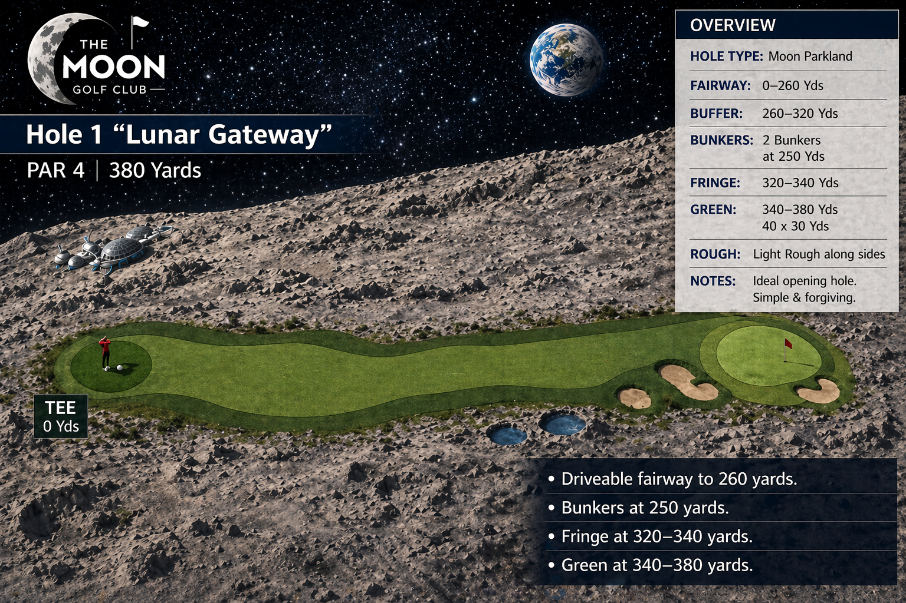

Fairway ends at 240 yards | Bunkers at 250 yards

Distance Remaining: 380
Shots Taken: 0
No club-specific caddie advice is currently loaded.
The live caddie system remains active and ready for the next ruleset.
Scientific rule now active: caddies do not alter physics, move the ball, or create impossible outcomes.
Caddie effects are modelled through improved decision quality, better consistency, tighter dispersion, reduced hook/slice severity, and fewer extreme mishits.
Higher caddie levels improve the player's statistical consistency, especially in the short game and directional discipline, but do not guarantee results.
This keeps all caddie effects within scientifically possible golf behaviour.
Total distance: 140 to 155 yards
Carry distance: 115 to 140 yards
Reason: tee allows slightly upward strike and cleaner contact
Total distance: typically 125 to 145 yards
Effect: lower launch and harder strike conditions reduce distance
Handicap: 36
Swing speed: approx 60–70 mph
Consistency: moderate variance with occasional mishits
A controlled driver swing may produce better total distance and consistency than forcing a full 3-wood.
At this level, control often outperforms maximum effort.
Raw player randomness. Wider distance spread. Greater chance of poor outcomes and larger variance.
Small consistency improvement. Slightly tighter distance range. Slight reduction in extreme errors.
Typical effect: subtle enough that it may feel like ordinary better advice.
Noticeable consistency improvement. Better shot-shape discipline and fewer poor misses.
Strongest consistency gain. Narrower variance, fewer disasters, and stronger short-game steadiness.
Important: still no impossible physics and no guaranteed outcomes.
Full shots: 1% to 4% consistency improvement
Short game: 3% to 6%
Putting: 4% to 8%
Hook / slice reduction: 1% to 8%
Full shots: 3% to 8% consistency improvement
Short game: 6% to 12%
Putting: 8% to 15%
Hook / slice reduction: 8% to 20%
Full shots: 5% to 12% consistency improvement
Short game: 10% to 18%
Putting: 12% to 22%
Hook / slice reduction: 20% to 35%
Rare rescue case: up to 50% only for severe default misses.
Important rule: the OmniAtlas Custom Ball is separately purchased and fully compliant with golf rules and regulations.
The ball does not override physics. It improves performance through correct fitting of compression, spin profile, and launch compatibility to suit the player's game.
The quality of the compliant custom ball depends on the caddie level that prepares it.
Effect: 1% to 5% optimisation
Represents basic compliant fitting improvements.
Effect: 5% to 12% optimisation
Represents improved launch and spin matching.
Effect: 12% to 20% optimisation
Rare rescue: up to 25% on extreme near-OOB standard misses.
Represents top-tier player-specific fitting within compliant limits.
Improves swing consistency, alignment, club delivery, decision-making, and severe hook/slice control.
This is the player's learned improvement.
Improves spin profile and launch compatibility within conforming golf-ball limits.
This is equipment fitting, not a cheat mechanism.
OLP rule now active: OmniAtlas Liquefied Placebo is a hole-side liquefied meal drink with no proven scientific enhancement effect.
It is modelled as a small uncertain placebo-style influence. At low dose, it may sometimes help confidence, rhythm, or perceived steadiness. Sometimes it does nothing.
Sensible use: one sip per hole is enough. One carton per round is more than enough.
Overuse risk: too much OLP may reduce coordination, slow thinking, soften putting touch, cause discomfort or toilet urgency, and create back-nine fatigue.
Cartons Purchased: 0
Available Sips: 0
Sips This Hole: 0
Total Round Sips: 0
Current OLP Status: No OLP taken.
OLP effects are deliberately small, uncertain, and believable. It never creates impossible performance.
Graduated rough rule now active: rough becomes more punishing the further the ball finishes from the fairway.
Lie condition now matters. Fluffy lies can produce fliers, buried lies force steep recovery swings, grain direction changes distance, and trampled rough can be easier than deep long grass.
First cut: light resistance, usually playable with a mostly normal swing.
Second cut: thicker grass, more speed loss, higher contact risk.
Deep rough: severe penalty where escape can matter more than distance.
Fluffy lie: ball sits up and may jump as a flyer.
Buried / nested lie: ball sits down and requires a steep aggressive swing.
Against the grain: grass snags the club and reduces distance.
With the grain: grass helps the club pass through and may produce a flyer.
Spectator / trampled rough: flattened grass can behave closer to firm hardpan than deep rough.
Light / first cut: use a regular swing, often with one extra club to account for loss of spin.
Thick / deep rough: use a more lofted club, such as a wedge or 9-iron, and prioritise returning to the fairway.
Buried lie: use a steep, aggressive swing with a wedge toward safety, because a standard swing can get caught in the grass.
Golden rule now active: the system improves good shots, not bad shots.
Performance help is kept inside believable golf variation: full shots can gain up to 5%, chips up to 12%, putts up to 15%, and rollout can occasionally gain more only when the strike and conditions justify it.
Suspicion guard: top-end rollout is rare, poor strikes do not receive big bonuses, and identical boosted outcomes should not repeat every shot.
Realism rule: no ball correction, no mid-flight assistance, no weak-shot rescue, and no impossible distance jump.
Last Realism Result: No shot checked yet.
Last Shot Quality: None
Last Applied Adjustment: 0.0%
This system protects believable simulation behaviour while allowing small, earned performance differences.
Training rule: each correct answer awards +0.1% to the relevant category.
Each wrong answer or timeout results in -0.1% to the relevant category.
Standard factual questions allow 15 seconds. Scenario questions allow 20 seconds.
The correct answer is not shown until the player has answered, or the timer has expired.
Gym rule now active: players may build strength through training knowledge focused on muscle, diet, recovery, and safe weight progression.
Recommended ceiling: players are advised to train only up to 10.0% extra muscle / strength for golf-specific benefit.
Beyond that point, players may continue if they wish, but excessive muscle can begin to reduce flexibility, timing, and fluid golf movement.
Supplements remain temporary. Gym knowledge represents the more permanent training pathway, though players must continue maintenance work to stay toned.
Activation rule now active: training answers now feed into live shot behaviour in small, skill-based ways.
Higher knowledge percentages can tighten distance range, improve club-choice efficiency, and slightly reduce poor shot outcomes for the matching shot type.
These are deliberately small scientific gains. Training does not create hidden power, impossible flight, or automatic success.
Driving: helps tee-shot efficiency and driver control
Gym Training: helps strength-related distance efficiency, within realistic limits
Fairway: improves fairway strike quality
Rough: improves recovery efficiency from rough lies
Weather: slightly improves wind and condition judgment
Course Management: slightly improves percentage-play outcomes
Bunker: improves bunker strike quality
Green Reading: improves slope-reading decisions
Putting: improves pace and line control
Rules: currently tracked and ready for future penalty / relief logic
No command loaded yet. Training influence will appear here once a valid shot command is accepted.
Official rule now active: adjustable club settings are locked for the stipulated round once the round begins.
Club 2 and Club 3 may be configured before the round starts, but not changed during the round.
Club 1 remains the OmniAtlas L1 all-in-one playing club with 8 live playable loft settings as part of its normal shot-use design.
If a club becomes broken later, replacement logic may be allowed under the broken-club pathway.
Current build status: round-lock rules are active, broken replacement tracking is prepared, full break / replacement gameplay can be expanded next.
Set Club 2 and Club 3 before the round begins. Once the round starts, these settings are locked under official rules.
Round Status: Pre-round setup open
Club 2 Setting: Neutral
Club 3 Setting: Neutral
These settings become locked for the round after confirmation.
Role: all-in-one precision and utility club
Playable settings: 04° Putter, 12° Stinger, 20° Hybrid, 28° 6 Iron, 36° 8 Iron, 44° Wedge, 52° Sand, 60° Lob
Use: putting, chipping, approach play, bunker use, controlled recovery, lower-flight and higher-flight options
Design note: treated as the live all-in-one playing club for Moon Golf
Role: controlled distance and safer long play
Round-lock settings: Low Flight, Neutral, High Launch
Use: long fairway strikes, safer tee use, longer approaches, lower-risk distance
Role: maximum distance and highest tee aggression
Round-lock settings: Low Loft (Distance), Neutral, High Loft (Control)
Use: tee shots, aggressive long play, distance-priority situations
Club: OmniAtlas L1 Adjustable Golf Driver
Primary use: tee shots and aggressive distance play
Average carry distance: 120 to 145 yards
Average total distance: 135 to 166 yards
Best force zone: 90% to 100% for full driver intent
Important rule: lower force may improve control, but greatly reduces distance potential
Lie: Fairway
36-handicap high-force total distance: 141 to 155 yards
Distance type: mainly total distance, not carry only
Gameplay note: driver from the fairway is more demanding than from the tee
Practical note: a safer club may often be the percentage play
Lie: First cut rough
36-handicap high-force total distance: 135 to 150 yards
1st cut effect: generally playable, but slightly less efficient and less consistent than the fairway
Practical note: a Hybrid will often give more consistency from this lie
Accuracy over power. At this level, keeping the ball in play is more beneficial than attempting maximum distance, which can lead to high scores.
You may consider trying a lower force rate in return for more focus on accuracy.
Most players in your category gain more from centred contact and control than from forcing maximum swing speed.
Reducing force slightly may improve strike quality and produce a better overall result.
Alternatively, you may be better using a lesser wood, Stinger, Hybrid or Iron, and just focus on staying on the fairway rather than trying to hit the green.
For a 36-handicap golfer, the 1st cut is generally manageable and similar to a fairway lie, but slightly less consistent.
You would likely get more consistency out of a Hybrid.
Lie: Walkway, cart path, firm non-grass surface, or slightly elevated artificial surface
Launch pattern: often lower than a normal fairway strike
Rollout: may increase if contact is clean
Distance expectation: usually remains within the 36-handicap driver range, but may match or slightly exceed fairway total distance on a clean strike
Hard surfaces are unforgiving and can make clean contact difficult for a high-handicap player.
Poor contact may reduce distance, create a very low shot, or make the ball skid unpredictably.
Striking the hard ground with the club may also risk damaging the club.
A low Stinger or safer controlled recovery shot may be wiser than driver from a walkway.
The player should avoid digging the club into the hard surface, because club damage and poor strike quality are real risks.
Player: 36-handicap baseline
Environment: shot launched from an atmospheric chamber toward lunar play conditions
Best-case clean strike: may approach or exceed 1,000 yards
Gameplay rule: extreme distance potential comes with extreme directional punishment
Landing rule: the ball may strike the lunar surface at high velocity and behave more like a projectile bounce than a normal Earth roll
Low gravity and near-vacuum conditions massively increase distance potential.
Hooks and slices become dramatically worse over very long travel distances.
Whiffs and off-centre contact remain possible because control is harder, not easier.
Best-case monster outcomes are possible, but they should not happen every time.
As you are in an atmospheric chamber, you can utilise full force, which could see you potentially hit many times farther than you would on Earth.
However, this also means hooks and slices are far worse. You may consider less force, in favour of more control.
All player shots must follow the official Moon Golf command structure. If a command is written incorrectly, then nothing happens.
The player message expresses intent only. It does not guarantee the result. Player skill, lie, club, course conditions, and weighted probability still decide the final outcome.
Enter the command exactly in the six-line format below. Invalid commands are ignored.
Name: OmniAtlas L1 Adjustable Loft Golf Club
Condition: Excellent
Broken: No
Replacement Allowed If Broken: Yes
Name: OmniAtlas 3-in-1 Fairway Wood L1 Adjustable Wood
Condition: Excellent
Broken: No
Locked Setting: Neutral
Name: OmniAtlas L1 Adjustable Golf Driver
Condition: Excellent
Broken: No
Locked Setting: Neutral